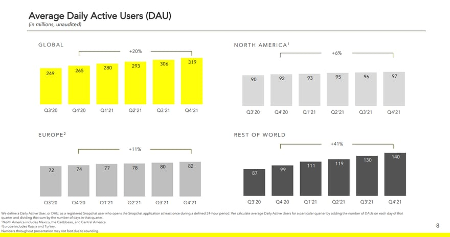

A l'origine, chaque photographie ou vidéo envoyée (« snap ») n'était visible par son destinataire que durant une à dix secondes,
mais il est désormais possible d'envoyer des snaps sans limite de durée.
Tous les snaps expirent après avoir été vus, mais peuvent être sauvegardés par une capture d'écran.
Snapchat comptait 6400 employés dans le monde en juin 2022. Son siège social est à Venice en Californie.
Snapchat est installé en France depuis 2016 au 16 rue Catherine de la Rochefoucauld, 75009 Paris.
Services proposés :
Messagerie
Le service le plus populaire et le plus utilisé de Snapchat est bien sûr sa messagerie instantannée,
celle-ci permet d'envoyer des messages à vos amis.
Photos, Memories et "My eyes only"
Cette application nous donne aussi la possibilité de prendre des photos et vidéos, avec ou sans filtres (visages) au choix.
Ces photos peuvent être envoyer, mais peuvent aussi être enregistrés dans les "Memories", galerie propre à Snapchat autre que celle
de votre téléphone. Une de ses fonctionnalités populaires est celle des "flashbacks", générés automatiquement : comme son nom l'indique,
il s'agit de rappels agréables du contenu que vous avez partagé au cours des dernières années.
Cela signifie que si vous avez ajouté un Snap to Memories le 1er juillet 2017,
il apparaîtra chaque 1er juillet en tant qu’histoire en vedette, vous invitant à le partager à vos amis en tant que flashbacks.
Puis, il existe le "My Eyes Only", une autre galerie, cette fois plus privé car il faut composé un code que vous choisissez pour y accéder.
Stories (abonnement + Discover)
Les "stories" sont également disponibles sur Snapchat, il s'agit simplement d'une publication d’une photo ou d’une vidéo
qui fait généralement moins de 30 secondes, et qui s'éface au bout de 24heures. Il existe plusieurs sortes de stories :
Les stories privées : seuls les amis que vous avez sélectionnés peuvent la voir et y réagir.
Les stories publiques : tous vos amis peuvent la voir et y réagir
La fonction "Discover" : visibles du monde entier, souvent utilisé par des marques et influenceurs (ici, il est possible de
s'abonner aux personnes postant ce genre de stories pour avoir les notification de nouveaux contenus.
Highlight/ Spotlight
Les Spotlight sont des vidéos courtes que vous devez défiler (à la façon de Tiktok par exemple), possédant un algorythme et vous proposant
toujours du nouveau contenu. Il y des possibilités de liker, commenter et partager ces vidéos courtes.
Carte Snapchat
Une des fonctionnalités propres à Snapchat est la carte. Sur celle-ci il est possible de voir la localisation de ses amis si ceux-ci l'ont
activé.
Création de Bitmojie
Enfin, il est possible de créer son propre avatar personnalisé "Bitmojie" pour ceux qui le souhaite, fonction plutôt orginal qui existe depuis longtemps
maintenant sur Snapchat.
Le public
Il a 319 millions d'utilisateurs actifs dans le monde au quatrième trimestre 2021, soit 54 millions de plus en 1 an.
Snapchat est un réseau social utilisé principalement par les plus jeunes, par exemple les plus jeunes des utilisateurs
n'ont pas forcément de carte sim et peuvent alors s'y connecter pour pouvoir se contacter via le wifi.

Evolution des utilisateurs actifs quotidiens de Snapchat dans le monde (2020-2021)
En France:
18 millions d'utilisateurs actifs par jour en France en janvier 2022.
57,5 % des utilisateurs de Snapchat en France sont âgés de 18 à 34 ans, confirmant la "jeunesse" de cette communauté.
Premier réseau social des 11-14 ans en France avec 54 % d'utilisation.
Premier réseau social des 15-19 ans en France avec 68 % d'utilisation.
Premier réseau social des 20-24 ans en France avec 82 % d'utilisation.
Second réseau social des 25-34 ans en France avec 42 % d'utilisation, derrière Facebook à 64 %
Le modéle économique de Snapchat
Le modèle économique de Snapchat est financé principalement par la publicité dans:
Discover: les médias paient pour publier leur contenus dans discover (comme MTV, CNN ou National Geographic)
Les stories: les publicité sont directement insérées entre les stories
Les filtres sponsorisés: les marques associent leurs noms à certains filtres et font leur pub.
Confidentialité des données
La confidentialité des données est un problème sur tous les réseaux sociaux.
Comment protéger ses données dans Snapchat
On peut choisir qui a le droit de voir nos données: choisir privé ou public en fonction des services
Quelle est la visibilité des données sur Snapchat ?
C'est le même principe: on choisit qui a le droit de voir ou pas ce qu'on poste sur Snapchat
A qui appartient les données sur Snapchat ?
Cela dépend :
Les données de mon compte (N° de téléphone, identifiant, adresse mail) appartiennent à Snapchat le temps que je suis chez eux
Les messages, eux, sont supprimés chez Snapchat dès qu'ils sont ouverts
On a la possibilité aussi de supprimer les messages/photos/vidéos après les avoir envoyés: ils sont supprimés aussi chez ceux qui les ont recus.
Conclusion
Avantages
Beaucoup de fonctionnalités regroupées sur une seule et même application
Des services propres à Snapchat qui pousse à l'installation (My Eyes Only par exemple)
Réseau social indispensable aujourd'hui pour les plus jeunes pour discuter avec leurs amis aujourd'hui
Inconvenients
Au bout d'un certain âge, l'application n'est plus indispensable et donc plus utilisé car inutile (+35ans)
Beaucoup de contenu inutile donc pollution d'Internet
Application plus difficile à prendre en main comparé à d'autre